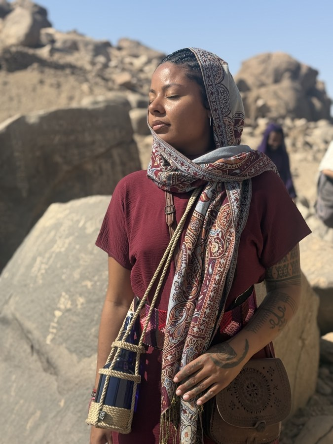

Nichole Elana
I'm a first-generation Colombian-American born by the Pacific, where ocean meets memory.

Raised by hands that understood care as ceremony.
My roots stretch from the Afro-Colombian rhythms of the Pacific coast to the Andes, the Cherokee lands of the Southeast, and the folk traditions of Swedish-German lineage.
Their medicine lived in flower baths and simmering pots, in remedies whispered in kitchens, in songs carried to the water, and in the quiet ways people learned to sustain life together.
This is the ancestral language I remember, and the one I am still learning to speak.
For more than a decade, I have studied herbalism, nourishment, ritual arts, and the many ways people tend life through seasons of change.
My work has been shaped as much by lived experience as by formal study — through my own relationship with womanhood, fertility, illness, ancestry, grief, creativity, community, and becoming.
Madre y Agua first arrived as a dream.
Over time, it revealed itself as a home for the threads I had been gathering all along.
- Food
- Flowers
- Water
- Story
- Rhythm
- Relationship
A place where the everyday and the ceremonial meet.
A place devoted to the ritual arts of living in relationship.
Still following the threads.
Today, I continue following the threads between memory and becoming — exploring how we care for what we have inherited while cultivating what wishes to emerge.